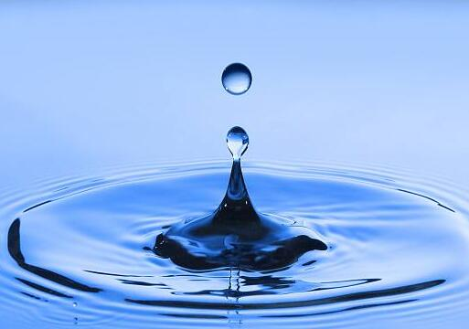

背景与意义
水的浪费会使人吃惊，水资源往往就在“指尖”流逝。乌鲁木齐约有200万只水龙头，130余万只马桶，如果有四分之一漏水，一年就要损失上亿吨的水！此外，地下管道的暗漏更是触目惊心，多数用水单位内部都有暗漏的发生，个别单位的每月漏水量甚至可达万吨以上！
一个滴水的水龙头，一天可以浪费1至6升的水，一个漏水的马桶，一天要浪费3至25升的水。所以我们要珍惜每一滴水 .
水，并不是取之不尽，用之不竭的，节约用水，我们要从身边的每一件事做起，从生活的点点滴滴做起。一滴水，微不足道，但是，不停地滴起来，数量就很可观了。据测定，"滴水"在1个小时里可以浪费到3.6公斤水；1个月里可集到2.6吨水。这些水量，足可以供给一个人的生活所需。可见，一点一滴的浪费都是不应该有的。至于连续成线的小水流，每小时可集水17公斤，每月可集水12吨；哗哗响的"大水"，每小时可集水670公斤，每月可集水482吨。可见，节约用水要从点滴做起。
节约用水